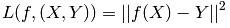
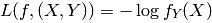
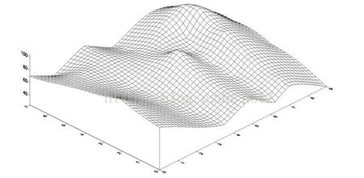
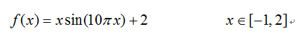
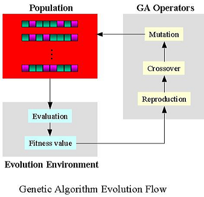

机器学习按其学习形式可分为：监督学习，无监督学习，半监督学习（也可以用hinton所说的强化学习）等。
学习形式分类
监督学习（Supervised Learning）
从给定的训练数据集中学习出一个函数（模型参数），当新的数据到来时，可以根据这个函数预测结果。监督学习的训练集要求包括输入输出，也可以说是特征和目标。训练集中的目标是由人标注的。监督学习就是最常见的分类（注意和聚类区分）问题，通过已有的训练样本（即已知数据及其对应的输出）去训练得到一个最优模型（这个模型属于某个函数的集合，最优表示某个评价准则下是最佳的），再利用这个模型将所有的输入映射为相应的输出，对输出进行简单的判断从而实现分类的目的。也就具有了对未知数据分类的能力。监督学习的目标往往是让计算机去学习我们已经创建好的分类系统（模型）。
监督学习是训练神经网络和决策树的常见技术。这两种技术高度依赖事先确定的分类系统给出的信息，对于神经网络，分类系统利用信息判断网络的错误，然后不断调整网络参数。对于决策树，分类系统用它来判断哪些属性提供了最多的信息。
常见的有监督学习算法：回归分析和统计分类。最典型的算法是KNN和SVM。
Regression：Y是实数vector。回归问题，就是拟合(x,y)的一条曲线，使得价值函数(costfunction) L最小

Classification：Y是一个有穷数(finitenumber)，可以看做类标号，分类问题首先要给定有lable的数据训练分类器，故属于有监督学习过程。分类过程中cost function l(X,Y)是X属于类Y的概率的负对数。

无监督学习（Unsupervised Learning）
输入数据没有被标记，也没有确定的结果。样本数据类别未知，需要根据样本间的相似性对样本集进行分类（聚类，clustering）试图使类内差距最小化，类间差距最大化。通俗点将就是实际应用中，不少情况下无法预先知道样本的标签，也就是说没有训练样本对应的类别，因而只能从原先没有样本标签的样本集开始学习分类器设计。
非监督学习目标不是告诉计算机怎么做，而是让它（计算机）自己去学习怎样做事情。非监督学习有两种思路。第一种思路是在指导Agent时不为其指定明确分类，而是在成功时，采用某种形式的激励制度。需要注意的是，这类训练通常会置于决策问题的框架里，因为它的目标不是为了产生一个分类系统，而是做出最大回报的决定，这种思路很好的概括了现实世界，agent可以对正确的行为做出激励，而对错误行为做出惩罚。
无监督学习的方法分为两大类：
(1)一类为基于概率密度函数估计的直接方法：指设法找到各类别在特征空间的分布参数，再进行分类。
(2)另一类是称为基于样本间相似性度量的简洁聚类方法：其原理是设法定出不同类别的核心或初始内核，然后依据样本与核心之间的相似性度量将样本聚集成不同的类别。
利用聚类结果，可以提取数据集中隐藏信息，对未来数据进行分类和预测。应用于数据挖掘，模式识别，图像处理等。
PCA和很多deep learning算法都属于无监督学习。
学习方法分类
经验性归纳学习
归纳学习旨在从大量的经验数据中归纳抽取出一般的判定规则和模式，是从特殊情况推 导出一般规则的学习方法。归纳学习的目标是形成合理的能解释已知事实和预见新事实的一 般性结论。例如，通过“麻雀会飞” “燕子会飞”等观察事实，、可以归纳得到“鸟会飞” 这样的一般结论。归纳学习由于依赖于经验数据，因此又称为经验学习（Empirical Learning)， 由于归纳依赖于数据间的相似性，所以也称为基于相似性的学习（Similarity Based Learning) 。
在机器学习领域，一般将归纳学习问題描述为使用训练实例以引导一般规则的搜索问 题。全体可能实例构成实例空间，.全体可能的一般规则构成规则空间。基于规则空间和实例 空间的学习就是在规则空间中搜索要求的规則，并从实例空间中选出一些示教的例子，以便 解决规则空间中某些规则的二义性问题。学习的过程就是完成实例空间和规则空间之间同 时、协调的搜索，最终找到要求的规则。
分析学习
分析学习是从一个或少数几个实例出发，运用领域知识进行分析。其主要特征位，推理策略主要是演绎，而非归纳的这样一种机器学习方法。
类比学习
类比学习的基础是类比推理。所谓类比推理，就是指由新事例与已知事例在某些方面类似，从而推出它们在其他方面也相似。显然类比推理就是在多个相似域之间进行的。
遗传算法
遗传算法（Genetic Algorithm, GA）起源于对生物系统所进行的计算机模拟研究。它是模仿自然界生物进化机制发展起来的随机全局搜索和优化方法，借鉴了达尔文的进化论和孟德尔的遗传学说。其本质是一种高效、并行、全局搜索的方法，能在搜索过程中自动获取和积累有关搜索空间的知识，并自适应地控制搜索过程以求得最佳解。
遗传算法中每一条染色体，对应着遗传算法的一个解决方案，一般我们用适应性函数（fitness function）来衡量这个解决方案的优劣。所以从一个基因组到其解的适应度形成一个映射。可以把遗传算法的过程看作是一个在多元函数里面求最优解的过程。可以这样想象，这个多维曲面里面有数不清的“山峰”，而这些山峰所对应的就是局部最优解。而其中也会有一个“山峰”的海拔最高的，那么这个就是全局最优解。而遗传算法的任务就是尽量爬到最高峰，而不是陷落在一些小山峰。（另外，值得注意的是遗传算法不一定要找“最高的山峰”，如果问题的适应度评价越小越好的话，那么全局最优解就是函数的最小值，对应的，遗传算法所要找的就是“最深的谷底”）
问题的提出与解决方案： 让我们先来考虑考虑下面这个问题的解决办法。
已知一元函数：

现在要求在既定的区间内找出函数的最大值。

“袋鼠跳”问题
既然我们把函数曲线理解成一个一个山峰和山谷组成的山脉。那么我们可以设想所得到的每一个解就是一只袋鼠，我们希望它们不断的向着更高处跳去，直到跳到最高的山峰（尽管袋鼠本身不见得愿意那么做）。所以求最大值的过程就转化成一个“袋鼠跳”的过程。
模拟物竞天择的生物进化过程，通过维护一个潜在解的群体执行了多方向的搜索，并支持这些方向上的信息构成和交换。是以面为单位的搜索，比以点为单位的搜索，更能发现全局最优解。（在遗传算法中，有很多袋鼠，它们降落到喜玛拉雅山脉的任意地方。这些袋鼠并不知道它们的任务是寻找珠穆朗玛峰。但每过几年，就在一些海拔高度较低的地方射杀一些袋鼠，并希望存活下来的袋鼠是多产的，在它们所处的地方生儿育女。）（或者换个说法。从前，有一大群袋鼠，它们被莫名其妙的零散地遗弃于喜马拉雅山脉。于是只好在那里艰苦的生活。海拔低的地方弥漫着一种无色无味的毒气，海拔越高毒气越稀薄。可是可怜的袋鼠们对此全然不觉，还是习惯于活蹦乱跳。于是，不断有袋鼠死于海拔较低的地方，而越是在海拔高的袋鼠越是能活得更久，也越有机会生儿育女。就这样经过许多年，这些袋鼠们竟然都不自觉地聚拢到了一个个的山峰上，可是在所有的袋鼠中，只有聚拢到珠穆朗玛峰的袋鼠被带回了美丽的澳洲）。
遗传算法的实现过程
遗传算法的实现过程实际上就像自然界的进化过程那样。首先寻找一种对问题潜在解进行“数字化”编码的方案。（建立表现型和基因型的映射关系）然后用随机数初始化一个种群（那么第一批袋鼠就被随意地分散在山脉上），种群里面的个体就是这些数字化的编码。接下来，通过适当的解码过程之后（得到袋鼠的位置坐标），用适应性函数对每一个基因个体作一次适应度评估（袋鼠爬得越高，越是受我们的喜爱，所以适应度相应越高）。用选择函数按照某种规定择优选择（我们要每隔一段时间，在山上射杀一些所在海拔较低的袋鼠，以保证袋鼠总体数目持平。）。让个体基因变异（让袋鼠随机地跳一跳）。然后产生子代（希望存活下来的袋鼠是多产的，并在那里生儿育女）。遗传算法并不保证你能获得问题的最优解，但是使用遗传算法的最大优点在于你不必去了解和操心如何去“找”最优解。（你不必去指导袋鼠向那边跳，跳多远。）而只要简单的“否定”一些表现不好的个体就行了。（把那些总是爱走下坡路的袋鼠射杀，这就是遗传算法的精粹！）
所以我们总结出遗传算法的一般步骤：开始循环直至找到满意的解。
1.评估每条染色体所对应个体的适应度。
2.遵照适应度越高，选择概率越大的原则，从种群中选择两个个体作为父方和母方。
3.抽取父母双方的染色体，进行交叉，产生子代。
4.对子代的染色体进行变异。
5.重复2，3，4步骤，直到新种群的产生。
结束循环。
